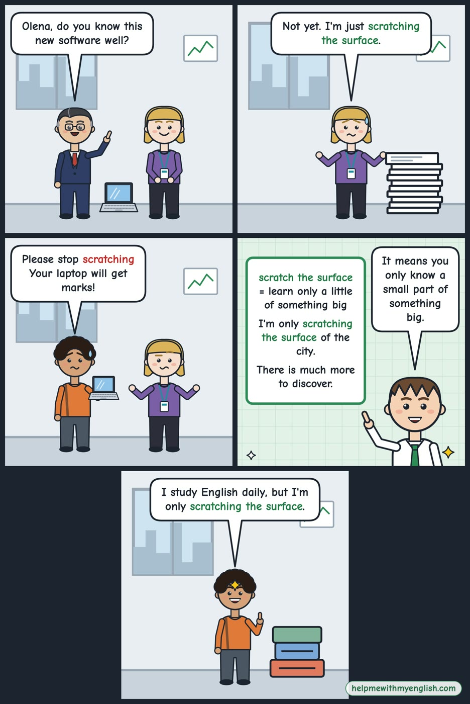

scratch the surface
To learn or do only a very small part of something that is much bigger.
I've lived here a year, but I'm only scratching the surface of the city.
Tip: Usually used as 'only scratching the surface (of something)' or 'barely scratched the surface'; it describes how much is still left to learn, see or do, so it fits big subjects, projects and places.
Hear it in conversation
Workbook
1. What does it mean?
In this conversation, what does 'scratched the surface' mean?
2. Fill the gap
We've read about forty reviews so far, but with thousands of customer comments, we've barely .
3. Choose the best reply
Ken: Have you seen everything in the museum yet? It's enormous.
4. Your turn: speak
Tell me about a subject or skill you would like to learn more about, and why.
Show an example answer
I'd love to learn more about cooking from different countries. I've tried a few recipes from Italy and Thailand, but I feel like I've only scratched the surface. There are so many regional dishes and techniques that I've never even heard of.
Answer key: scratch the surface
- 1. B. He has covered only a small part of a much larger subject.
- 2. scratched the surface
- 3. C. Not even close. After three hours, I've only scratched the surface.
- 4. Example: I'd love to learn more about cooking from different countries. I've tried a few recipes from Italy and Thailand, but I feel like I've only scratched the surface. There are so many regional dishes and techniques that I've never even heard of.
See it in a comic
